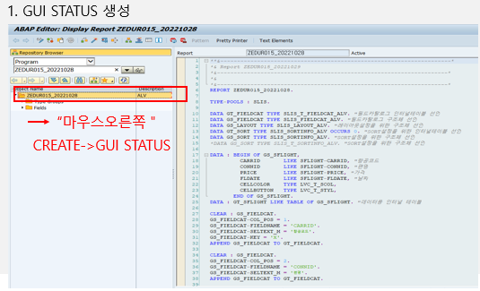

20221108 - ALV
CALL Function ALV
Function ALV에서 사용되는 ’REUSE_ALV_GRID_DISPLAY’는 Method를 호출 할 때, ABAP Dictionary를 참고하거나, 필드 카탈로그 정의
ABAP Dictionary:
I_STRUCTURE_NAME = 'DB_TABLE_NAME' "parameter를 이용하여 정의필드 카탈로그:
EXPORTING
IT_FIELDCAT "parameter 이용→ 이렇게 parameter를 이용하여 ALV 내 많은 기능 사용
Parameter 종류
I_CALLBACK_PROGRAM: ALV 함수를 호출하고 반환 (SY-REPID로 설정)
I_CALLBACK_PF_STATUS_SET: ALV 프로그램 내 STATUS 설정
I_CALLBACK_USER_COMMAND: ALV 프로그램 내 버튼 기능 구현
I_STRUCTURE_NAME: ALV 구조 설정 (구조체, 테이블)
I_GRID_TITLE: ALV GRID의 헤더 타이틀
I_GRID_SETTINGS: ALV GRID 설정 (편집 시 즉시 이벤트 호출)
IS_LAYOUT: ALV 레이아웃 설정
IT_FIELDCAT: ALV의 구성 항목칼럼 (필드 카탈로그) 설정
IT_EXCLUDING: ALV 기본 버튼 제거 항목
IT_SORT: ALV 조회 시 기본 SORT 칼럼 설정
IT_FILTER: ALV 조회 시 필터 설정
I_SAVE: ALV 레이아웃 저장 시 옵션
IS_VARIANT: ALV 레이아웃을 저장하고 호출하도록 설정
IT_EVENTS: ALV의 이벤트 정의
GUI STATUS
- GUI STATUS 생성

- GUI STATUS TEXT 입력

- Application Toolbar 입력
Standard toolbar: SAP에 존재하는 모든 스크린에 기본적으로 제공되는 toolbar
Application toolbar: 개발자가 추가하는 toolbar
menu bar: 표준 프로그램에서 기본적으로 제공하지만, 이 외 추가로 구성하고 싶은 메뉴 설정

- Function 속성 입력

- Function 텍스트, 아이콘 입력

- Function 키 입력

- Function TYPE

E: 트랜잭션 종료 시 설정하는 Function type이며, AT-EXIT-COMMAND 모듈 수행
S: 시스템이 사용하는 Function type
T: 트랜잭션을 호출하는 Function type
P: local GUI function type
H: PROCESS ON HELP REQUEST 이벤트 호출
SPACE: 표준 APPLICATION Function type
- STANDARD Toolbar 입력

BACK, EXIT, CANC는 반드시 해야 함
- Function TYPE

EVENT
- 변수선언

- 이벤트에 필요한 변수 데이터 설정
GS_EVENT-NAME: ALV 표준 함수 내의 ALV 이벤트 이름 설정
GS_EVENT-FORM: ALV를 호출하는 프로그램 내에서, GUI STATUS를 설정하기 위한 FORM 구문 명 기술

- parameter에 이벤트 추가

- CALL BACK parameter 추가


- FORM 문을 통해 GUI_STATUS 화면 추가

- 실행

USER COMMAND
- GUI STATUS 생성

BACK, EXIT, CANC는 반드시 해야 함
- parameter 추가

- FORM문 생성

- 실행